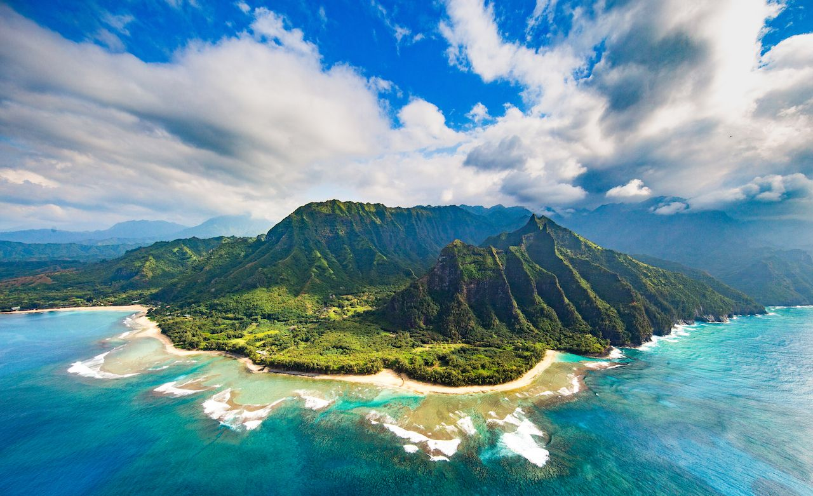

When planning to travel it is important to find the current safest places to ensure that you'll enjoy your vacation!

Travel Website Cheryl
Cheryl Amelia's Passion for Travel!
Dreaming of travel is about more than visiting places—it’s about embracing new experiences, cultures, and connections. It’s wandering through cobblestone streets in Europe, exploring vibrant Asian markets, marveling at Africa’s wild savannahs, or finding peace in quiet, hidden corners of the world. Each destination offers lessons: ancient ruins teach resilience, bustling cities reveal ingenuity, and serene landscapes show the beauty of simplicity. Travel transforms you, enriching your perspective and deepening your appreciation for life’s diversity. So dream boldly, letting the anticipation of new horizons fuel your spirit and inspire your journey.
Your adventure of a lifetime begins here!
Table of Content
Format:
- Country
- Places to visit
- Hawaii
- Taiwan (unordered in ordered)
- Taipei 101, Taipei
- Taroko Gorge, Hualien
- Sun Moon Lake, Nantou
- South Korea
- Scotland
Hawaii
 I think Hawaii is paradise on Earth , offering a unique blend of tropical beauty, vibrant culture, and outdoor adventure. With its pristine beaches, lush rainforests, and stunning volcanoes, Hawaii invites you to explore its diverse landscapes. Relax on the golden sands of Waikiki, hike to the summit of Mauna Kea for awe-inspiring views, or snorkel among colorful marine life in Hanauma Bay. Learn about Polynesian traditions at a luau and visit historical sites like Pearl Harbor. Each island, from Oahu to Maui and the Big Island, has its own distinct charm, making Hawaii a dream destination for travelers.offering a unique blend of tropical beauty, vibrant culture, and outdoor adventure. With its pristine beaches, lush rainforests, and stunning volcanoes, Hawaii invites you to explore its diverse landscapes. Relax on the golden sands of Waikiki, hike to the summit of Mauna Kea for awe-inspiring views, or snorkel among colorful marine life in Hanauma Bay. Learn about Polynesian traditions at a luau and visit historical sites like Pearl Harbor. Each island, from Oahu to Maui and the Big Island, has its own distinct charm, making Hawaii a dream destination for travelers.
Taiwan

Taipei 101, Taipei
An iconic skyscraper with stunning city views from its observation deck, alongside high-end shopping and dining.Taroko Gorge, Hualien
A breathtaking national park featuring marble cliffs, deep gorges, and scenic trails like the Shakadang Trail and Swallow Grotto.Sun Moon Lake, Nantou
A serene lake surrounded by mountains, perfect for cycling, boating, and visiting the Wenwu Temple.Scotland
 Traveling through Scotland is like stepping into a fairytale. From the dramatic Highlands with their misty mountains and shimmering
lochs to the ancient castles that dot the countryside, Scotland offers a mix of natural beauty and historical intrigue.
Traveling through Scotland is like stepping into a fairytale. From the dramatic Highlands with their misty mountains and shimmering
lochs to the ancient castles that dot the countryside, Scotland offers a mix of natural beauty and historical intrigue. Visit the vibrant cities of Edinburgh and Glasgow, where modern culture blends seamlessly with rich traditions.
Don't miss the chance to explore the Isle of Skye's rugged coastline, hike through Cairngorms National Park, or savor a glass of whisky at a distillery.
Whether you're tracing the footsteps of legendary clans or marveling at the Northern Lights, Scotland is a magical destination that captivates every traveler.
South Korea
 South Korea is a perfect fusion of tradition and modernity, offering experiences for every kind of traveler.
Explore the buzzing streets of Seoul, where high-tech innovation meets centuries-old palaces like Gyeongbokgung.
Escape to the serene countryside to hike in Seoraksan National Park or wander the picturesque tea fields of Boseong.
South Korea is a perfect fusion of tradition and modernity, offering experiences for every kind of traveler.
Explore the buzzing streets of Seoul, where high-tech innovation meets centuries-old palaces like Gyeongbokgung.
Escape to the serene countryside to hike in Seoraksan National Park or wander the picturesque tea fields of Boseong. Indulge in Korea’s world-renowned cuisine, from sizzling BBQ to comforting bowls of kimchi stew. Don’t miss a visit to Jeju Island, known for its volcanic landscapes and beautiful beaches. South Korea’s unique charm and warm hospitality make it an unforgettable destination.
AI Game Link
JUMP TO TOP OF PAGE (On Page Anchor)